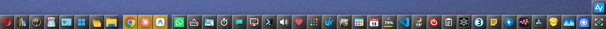
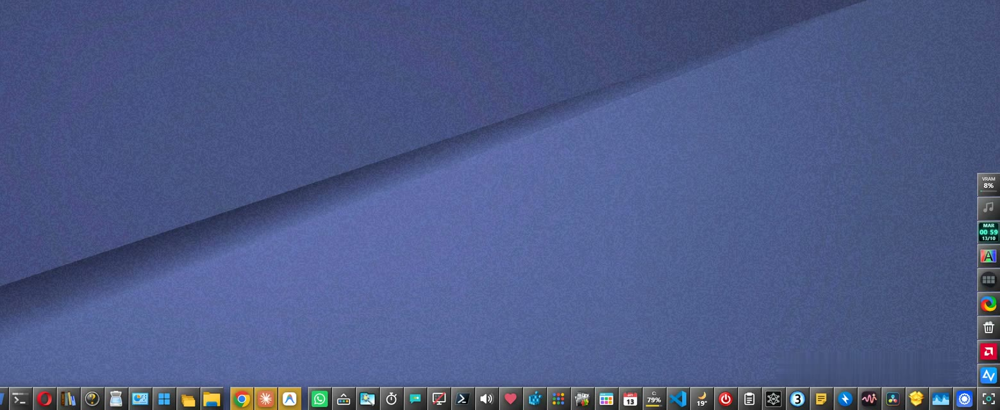
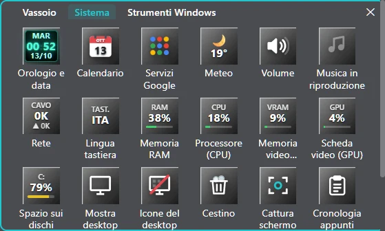
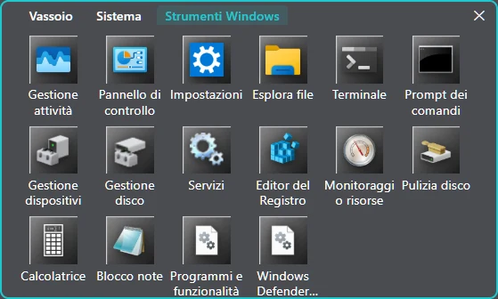
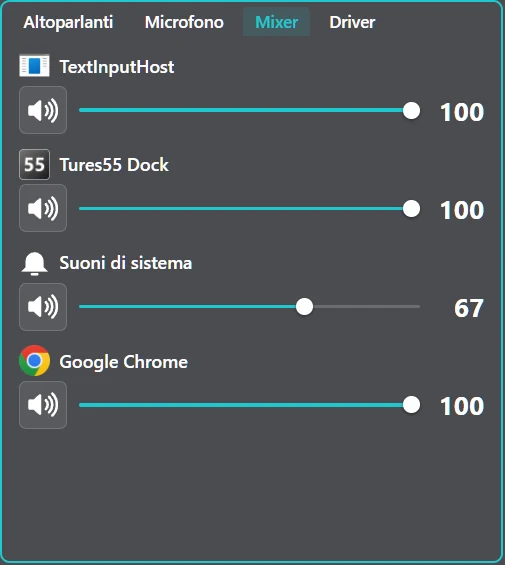
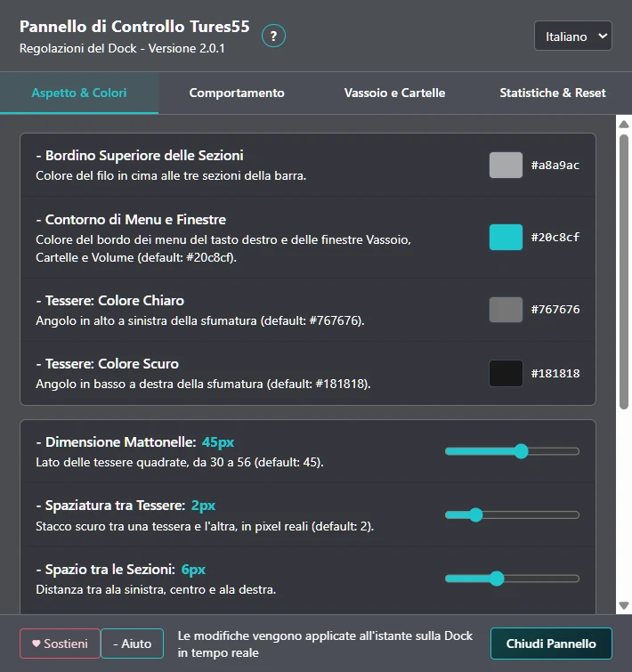

Free · Windows 11 · English & Italian
The Windows taskbar,
reimagined.
Tures 55 Dock replaces the taskbar with an elegant, easy-to-read dock: apps, widgets, system tray and volume, all one click away.

Scroll to fly through the features · drag to look around · click an image for a closer lookScroll to fly through the features · tap an image for a closer look
01 · Apps
What you use most, always in the middle.
Tiles sort themselves by usage: the things you open most drift toward the center. Open apps move to the middle and go back to their place when you close them.
- Click to open, minimize or bring an app to the front
- Middle-click to close it
- Drag a tile to move it, or lock it in place
- Automatic sorting can be turned off

02 · Widgets
Everything at a glance.
Clock, calendar, weather, volume, now playing, network, memory, CPU, graphics card, disks, quick notes, timer and more. Every widget is a tile: add or remove it with a right-click.

03 · Tray & folders
The system tray, finally comfortable.
The icons next to the clock, system widgets and Windows tools live in a tidy, tabbed window. The folders you open often join the Folders window by themselves.

04 · Volume
A complete volume panel.
Speakers and microphone, per-app volume in the mixer and audio driver selection, ASIO included. All one click from the dock.

05 · Control Panel
Yours, down to the details.
Colors, transparency, tile size, spacing, animations and taskbar behavior. Every change shows up on the dock instantly, and with “Save copy” you can take your whole dock to another PC.

06 · Download
Ready in a minute.
- Download the file
Tures55-Dock-Setup.exe. - Open it. If Windows shows “Windows protected your PC”, click “More info” and then “Run anyway”. This happens with programs that have no paid digital signature, like this one.
- Done. It installs without admin rights and keeps itself up to date.
A free alternative to RocketDock, ObjectDock and Winstep Nexus, built for Windows 11.
Frequently asked questions
Is it really free?
Yes, for personal use. No ads and no extra programs bundled in the installer.
What happens to the Windows taskbar?
Tures 55 hides it. To see it, just rest the mouse on the bottom edge of the screen; when you close Tures 55 it goes back to its place.
How does it update?
By itself: updates download automatically and install when you close the dock.
How do I uninstall it?
Like any program: Windows Settings → Apps → Installed apps → Tures 55 Dock → Uninstall.
Can I share it?
Yes: you may share the original installer, free of charge and unmodified, linking to this page.
I found a problem: what do I do?
The dock has “Report a problem”: it sends the author your description and the dock's log, no account needed.
Enjoying it? Buy me a coffee.
Tures 55 Dock is free and will stay free. If you find it useful, you can support its development.
Support on Buy Me a Coffee